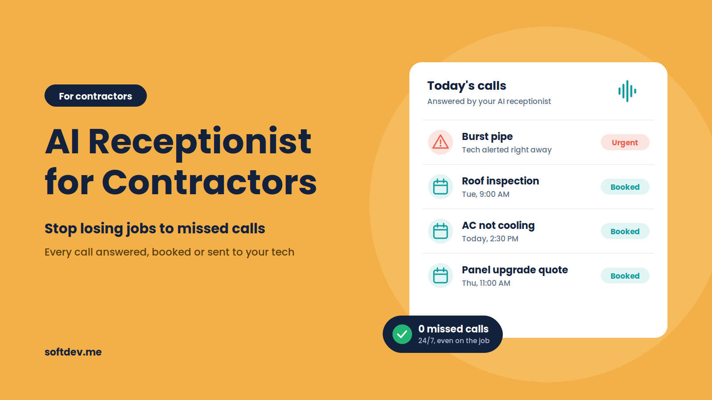
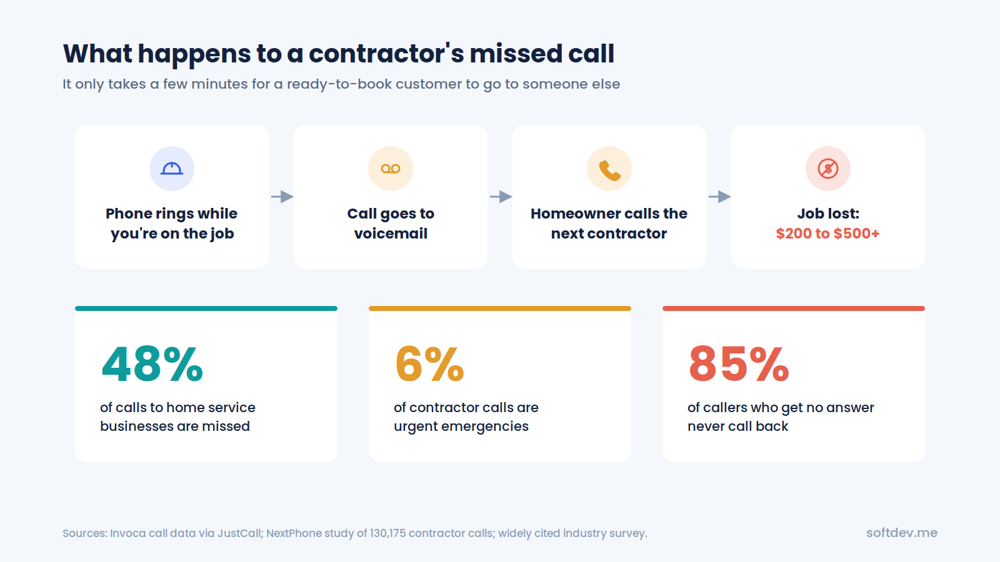
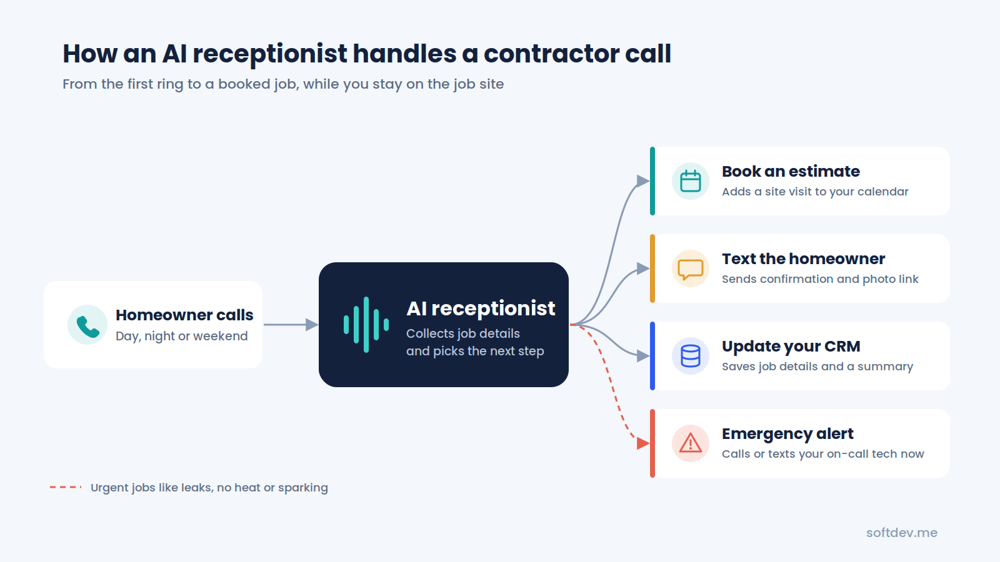
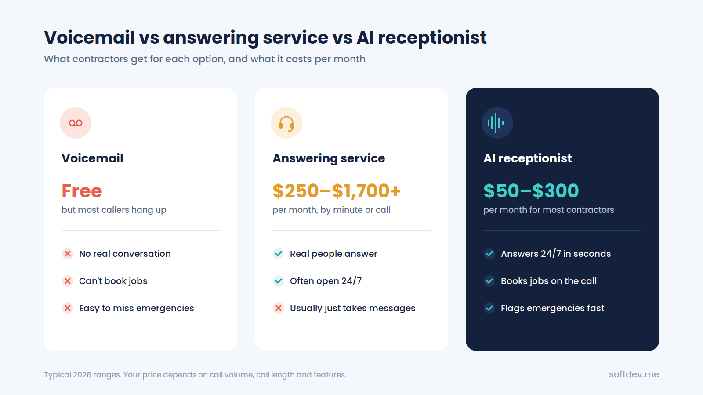
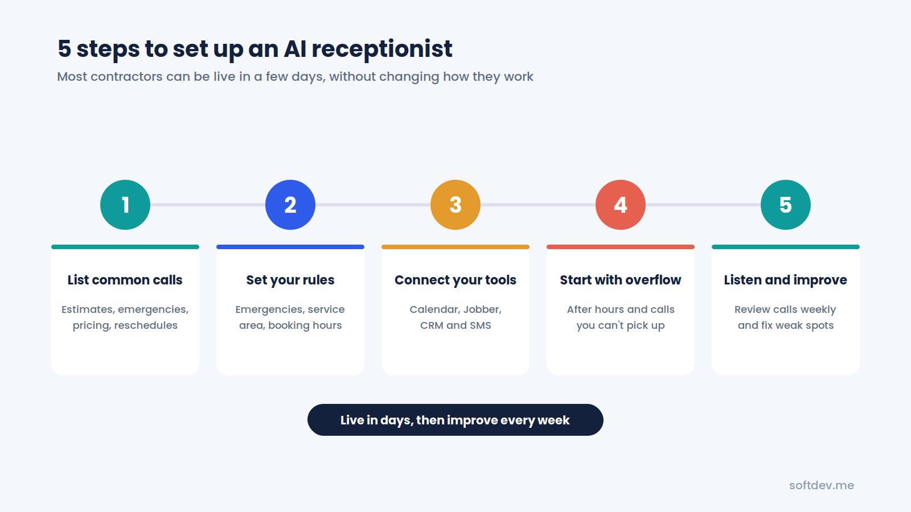

AI Receptionist for Contractors: Stop Losing Jobs to Missed Calls
How contractors can do everything better (answer every call, book more estimates, stop giving jobs to competitors!) even while on job site.

TL;DR - 6 takeaways - 15-second read
- Contractors miss a huge share of their calls because they are on roofs, under sinks, or driving between jobs.
- Most callers who reach voicemail do not leave a message. They call the next contractor on Google.
- An AI receptionist answers every call in seconds, 24/7, and talks like a real front desk.
- It can book estimates, flag emergencies, collect job details, and text the caller right away.
- It costs a small fraction of hiring office staff, and one saved job can cover months of use.
- Start with after-hours and overflow calls, then grow from there.
Introduction
Imagine you're up a ladder working on a job, and your phone starts ringing. Your hands are full, so you can't answer. By the time you call back, the homeowner has already hired someone else.
If you're a plumber, roofer, electrician, HVAC technician, or general contractor, this probably sounds familiar. You're busy doing the work your customers hired you for, but you can't always stop to answer the phone.
That's where an AI receptionist can help. It answers incoming calls, talks to customers, collects job details, books appointments, and sends you the information you need. You can keep working while it handles the calls.
In this guide, we'll explain how an AI receptionist works, how much it costs, and how you can set one up for your contracting business.
Why missed calls are a problem for contractors
For most contractors, the phone is one of their main sources of new business. When someone has a leaking pipe, a broken AC, or a damaged roof, they usually want help quickly.
They search online, find a few local contractors, and start calling. If you don't answer, they may simply call the next business on the list.
Here are a few statistics that show how common this problem is:
- Invoca's research, covering 70 million tracked business calls, found that home services had a 48% missed-call rate, the highest among the industries it measured (source).
- A separate study of contractor calls found that 74% went unanswered. The reported rate was around 77% for roofers and 70% for HVAC companies (source).
- Around 6% of the calls in that study were emergencies, including the kinds of urgent jobs contractors don't want to miss.
- One widely cited survey suggests that about 85% of callers who don't get an answer never call back.
Now consider what a missed call could cost your business. A single missed opportunity might mean losing a $200–$500 repair job. For roofers and remodelers, the potential loss can be much higher (source).
You're also losing the value of the money you spent on advertising and generating that lead.
The frustrating part is that these missed calls often happen when you're busiest. The more jobs you have, the harder it becomes to answer every call.

What does an AI receptionist do for contractors?
An AI receptionist is a voice assistant that answers your business phone and speaks with customers in a natural, conversational way.
Think of it as a virtual receptionist that can handle many of the calls you'd normally manage yourself or pass to an office employee.
Here's what it can do:
| Task | How it helps |
|---|---|
| Answer incoming calls | Picks up calls day or night, even when several customers call at once |
| Collect job details | Asks for the customer's name, address, type of work, and urgency |
| Book estimates | Checks your calendar and schedules estimates or service visits |
| Identify emergencies | Recognizes urgent issues, such as leaks, heating failures, or electrical problems, and alerts the appropriate team member |
| Answer common questions | Provides information about your services, business hours, service area, and warranties |
| Send follow-up messages | Sends booking confirmations or links for customers to upload photos |
| Update your CRM | Saves contact details, call summaries, and next steps for your team |
An AI receptionist doesn't replace you or your crew. It takes care of incoming calls while you focus on your work. When a customer needs to speak with you directly, the system can transfer the call or notify you, depending on how it's configured.
How does an AI receptionist handle a call?
Let's say a homeowner calls while you're working at a customer's property. Here's what happens:
- The customer calls your usual business number.
- The AI receptionist answers with your company's greeting.
- It asks what the customer needs and collects the relevant details.
- If the issue is urgent, it follows your emergency instructions and alerts or transfers the call to the appropriate person.
- If the customer needs a new service, the AI can book an estimate or appointment using your connected calendar.
- The customer receives a confirmation message, and you get a summary of the call.
A typical call might take just a few minutes, depending on the customer's needs. By the time you finish your current task, you may already have the details of a new job waiting for you.

Examples of how different contractors can use an AI receptionist
Different trades deal with different types of calls. Here's how an AI receptionist can help with some common situations.
Plumbers
A homeowner calls late at night because water is leaking through the ceiling. The AI collects the address, asks questions to understand the situation, and follows your emergency procedure. It can alert your on-call plumber and, if configured, provide approved basic guidance, such as how to locate the main water shutoff.
Roofers
After a hailstorm, your phone may ring constantly for several days. Instead of sending every caller to voicemail, the AI can answer multiple calls, collect property addresses and damage details, and schedule roof inspections.
HVAC contractors
When temperatures rise in summer, customers start calling about broken AC units. The AI can collect information about the problem, distinguish urgent requests from routine maintenance based on your rules, and schedule available service appointments.
Electricians
When your team is working on electrical panels or handling installations, answering the phone isn't always practical. An AI receptionist can take quote requests, answer basic questions about your service area, and schedule site visits around your team's availability.
Remodelers and general contractors
Larger projects often require more information before you can provide an estimate. The AI can ask about the type of project, expected budget, and timeline. It can then schedule a consultation and send the homeowner a link to share photos or other details.
In each case, the goal is the same: customers get a quick response, and you have a better chance of turning incoming calls into booked jobs.
AI receptionist vs. voicemail vs. human answering service
When you can't answer the phone, you generally have three options: voicemail, a human answering service, or an AI receptionist.
Here's how they compare:
| Feature | Voicemail | Human answering service | AI receptionist |
|---|---|---|---|
| Available 24/7 | Records messages | Depends on the plan | Usually available 24/7 |
| Books appointments | No | Sometimes | Yes, with calendar integration |
| Handles multiple calls at once | No | Depends on capacity | Often yes |
| Identifies emergencies | No | If trained and instructed | If configured with clear rules |
| Knows your services | No | Usually follows a script | Can be configured with your business information |
| Typical monthly cost | Usually free | Around $250–$1,700 or more | Around $50–$300 |
These prices are estimates and can vary depending on the provider, plan, call volume, and features.
Voicemail is the cheapest option, but it doesn't help much when a customer needs an immediate answer. Many callers won't leave a message, and some will contact another contractor instead.
A human answering service gives customers someone to talk to, but the cost can increase as call volume grows. Depending on the service, operators may also have limited knowledge of your business and may only be able to take messages.
An AI receptionist can offer a middle ground. It can answer calls at any time, collect job details, and book appointments when connected to the right tools. For many small contractors, it can also be more affordable than hiring additional office staff.

How much does an AI receptionist cost?
In 2026, many AI receptionist options for small and midsize contractors fall somewhere between $50 and $300 per month. The actual cost depends on the provider, the number and length of calls, and the integrations you need.
For example, consider a contractor who regularly receives calls about roof inspections or emergency plumbing repairs. If the system helps secure even one additional job, that revenue could cover several months of the service.
Of course, the return depends on how many calls you receive, how many would otherwise be missed, and how many turn into paying customers.
If you want a more detailed breakdown of monthly plans, per-minute charges, and custom-built systems, see our guide on how much an AI receptionist costs in 2026.
Which tools should your AI receptionist connect to?
An AI receptionist becomes more useful when it works with the software you already use. Instead of simply taking a message, it can send customer details to the right place and help keep your schedule organized.
| Tool type | Examples | Why it matters |
|---|---|---|
| Field service software | Jobber, ServiceTitan, Housecall Pro | Helps create jobs and estimates in your existing system |
| Calendar | Google Calendar, Outlook | Checks availability and schedules appointments |
| CRM | GoHighLevel, HubSpot | Stores customer details, leads, and call summaries |
| Text messaging | Twilio or your existing phone provider | Sends confirmations and photo-upload links |
| Team notifications | SMS, Slack, WhatsApp | Alerts the right person when an urgent call comes in |
If you use a tool that doesn't offer a direct integration, you may still be able to connect it through automation platforms such as n8n or Make.
The aim is to make sure that information from each call reaches your team without someone having to enter everything manually.
What should you look for when choosing an AI receptionist?
Not every AI receptionist is designed for contractors. Before choosing one, make sure it can handle the situations your business deals with every day.
- Emergency handling: Can it recognize urgent calls and contact the right person quickly?
- Natural conversations: Does it sound clear and friendly when you call it yourself?
- Appointment booking: Can it book appointments directly in your calendar or field service software?
- Service area restrictions: Can it explain which locations you serve and politely handle requests from outside your area?
- Human handoff: Can callers speak with a real person when necessary?
- Call summaries: Does it send you a useful summary after each call?
- Clear pricing: Do you know what's included in the monthly plan and what happens if you exceed your call allowance?
It's worth testing the system with a few realistic scenarios before relying on it to handle your business calls.
How to set up an AI receptionist in five steps
You don't need to change your entire business to get started. A basic setup may be ready within a few days, depending on the tools and integrations involved.
1. Identify your most common calls
Start by listing the main reasons customers contact you. These might include estimate requests, emergency repairs, appointment changes, and questions about pricing or services.
2. Decide how the AI should respond
Set clear rules for handling emergencies, scheduling appointments, transferring calls, and serving customers outside your service area. Decide who should receive alerts when something needs immediate attention.
3. Connect your existing tools
Connect your calendar, CRM, and field service software where supported. This allows the system to save customer information and schedule appointments without creating extra work for your team.
4. Start with after-hours calls
You don't have to hand over every call immediately. Start by using the AI for calls outside business hours or when your team can't answer. Once you're comfortable with how it performs, you can expand its role.
5. Review calls and make improvements
Listen to a few call recordings or review transcripts and summaries each week. If the AI gives an unclear answer, misses an important detail, or struggles with a particular request, update its instructions and test it again.

Common mistakes to avoid
Even a well-designed AI receptionist needs the right setup. Here are a few mistakes worth avoiding.
- Making the greeting too long. Customers usually want to explain their problem and get help quickly. Keep the introduction short and friendly.
- Ignoring emergency calls. Make sure the system knows what to do when a customer reports an urgent issue, including when and how to contact a real person.
- Skipping calendar integration. If the AI can only take messages, your team may still need to handle all the scheduling manually.
- Making it difficult to reach a person. Some customers prefer speaking with someone directly. Give them a clear way to request a human.
- Never updating the system. Your services, availability, prices, and seasonal needs can change. Keep the AI's information and instructions up to date.
Conclusion
Missed calls can cost contractors valuable jobs, especially when customers need help quickly. But answering every call while working on-site isn't always realistic.
An AI receptionist can help by answering incoming calls, collecting job details, scheduling appointments, and alerting your team when a call needs attention. It gives customers a way to reach your business even when you're busy with a job or away from the phone.
You don't have to automate everything at once. Start with after-hours calls and overflow, connect your calendar, and review how the system performs. Once you see where it helps most, you can adjust it to fit the way your business operates.
Frequently asked questions
Will customers know they're talking to AI?
Some customers may recognize that they're speaking with AI. What matters most is that the conversation is clear, helpful, and easy to follow. The system should also offer a way to reach a real person when needed.
Can an AI receptionist handle emergency calls?
It can help identify urgent situations and follow your emergency procedures. You can configure it to alert or transfer calls to your on-call team. However, emergency handling should be tested carefully, and the system shouldn't replace professional judgment or emergency services.
Can I keep my existing business phone number?
In many cases, yes. You can usually forward calls from your current business number to the AI receptionist, either after a certain number of rings or outside business hours. The exact setup depends on your phone provider.
Does it work with Jobber, ServiceTitan, or Housecall Pro?
Some AI receptionist providers offer direct integrations with field service platforms. Others can connect through tools such as n8n or Make. Check that the specific integration supports the actions you need, such as creating jobs or booking appointments.
How long does setup take?
A simple setup may take one to three days. More complex systems that connect to multiple tools or require custom workflows can take one to three weeks or longer, depending on the requirements.